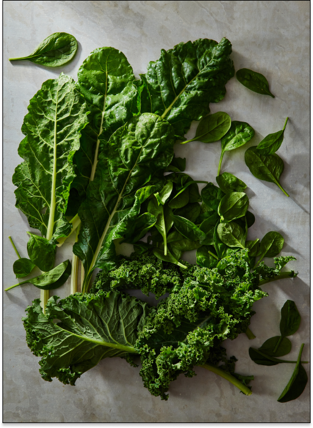
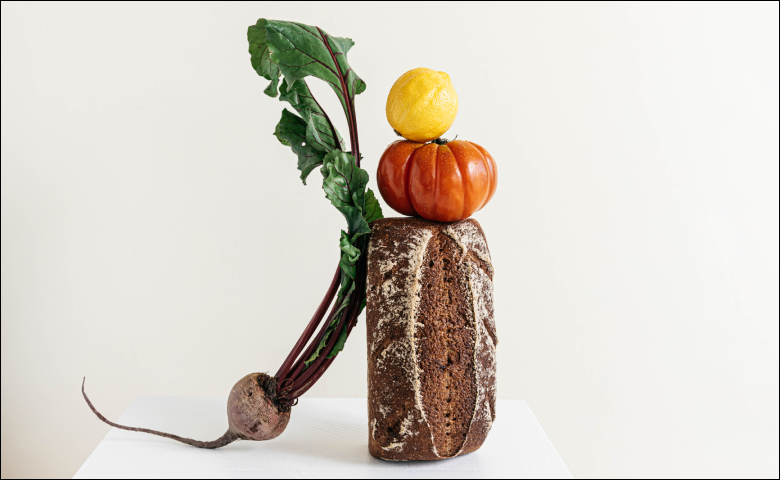

World Peas
Shop
Newstand
Who we are
My profile
Basket (3)
We’re farmers, purveyors, and eaters of organically grown food.
Browse our shop


Central California
— The person who grew these was located in Central California and, er, hopefully very well-compensated.